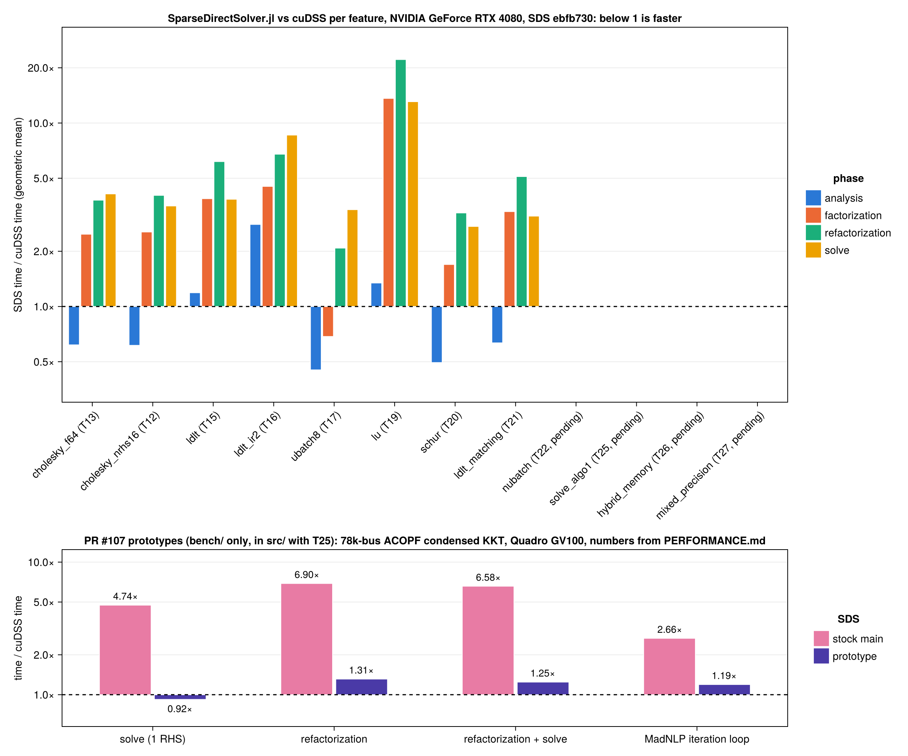

Performance
Time of SparseDirectSolver.jl divided by the time of cuDSS per feature and phase (BenchmarkTools medians), geometric mean over the benchmark matrices (below 1 is faster). Features whose task is not done yet are empty.

The per-matrix numbers are in bench/comparison/comparison.md. The benchmark harness and the cuDSS baselines are described in bench/README.md; the comparison is regenerated by hand:
julia --project=bench bench/compare.jl --solver=cudss
julia --project=bench bench/compare.jl --solver=sds --backend=cuda
julia --project=bench/report bench/compare_report.jl